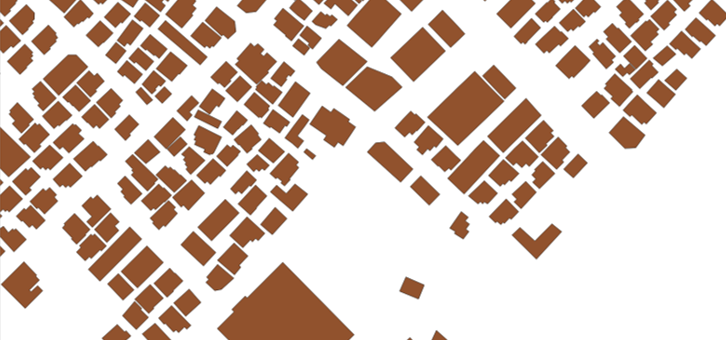
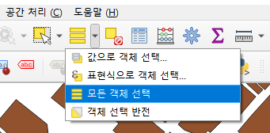
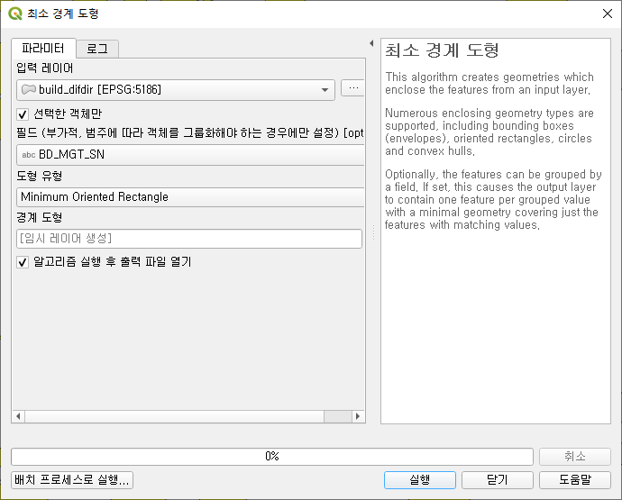
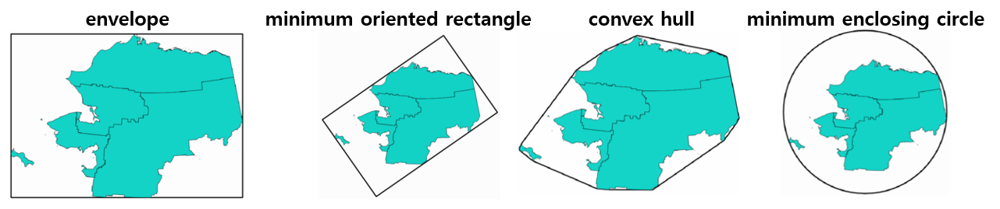
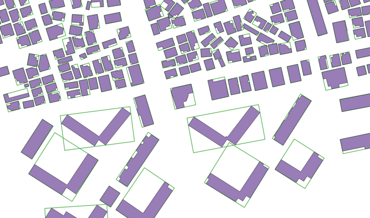
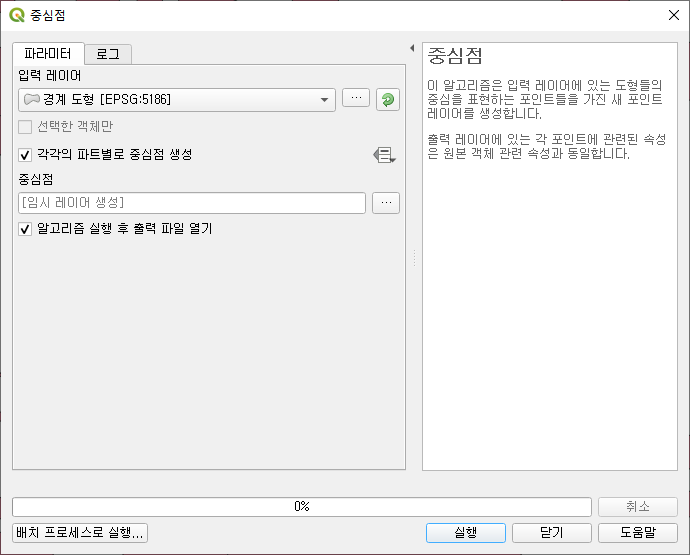
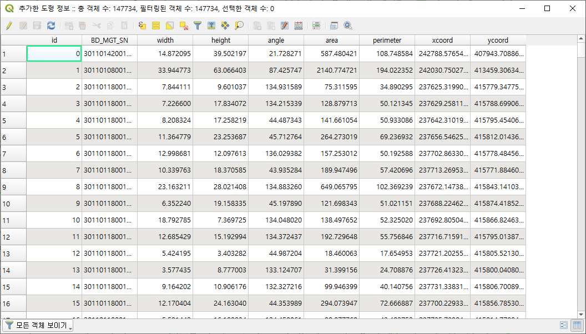
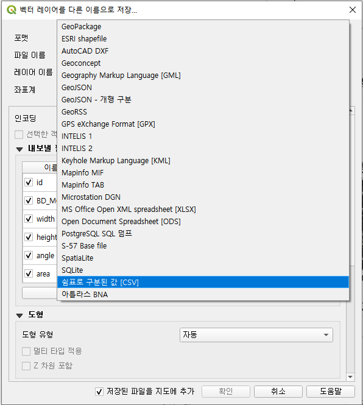

- QGIS에서 최소 경계 도형(minimum oriented rectangle)을 생성하고 중심점을 추가하여 csv로 출력하는 방법을 정리합니다.
- 사용한 QGIS의 버전은
3.10.9-A Coruña입니다.
References
1. shapefile 읽기
- QGIS에서 shapefile을 읽어옵니다.
- 건물 형상이 반영되어 곳곳이 울퉁불퉁합니다.

2. 대상 도형 선택
- 형상을 단순화 할 대상들을 선택합니다.
- 전체 도형을 대상으로 할 것이므로 전체를 선택합니다.

3. 최소경계도형 옵션 선택
공간 처리
Processing> 툴박스Toolbox> 최소 경계 도형Minimum Bounding Geometry을 실행합니다.
[선택한 객체만]을 선택합니다.
[필드]에서 개체식별자를 선택합니다.
- 개별 건물을 구분하는
BD_MGT_SN을 선택합니다. - 선택이 되지 않을 경우 전체를 뭉뚱그리는 도형이 생성됩니다.
- 개별 건물을 구분하는
[도형 유형]을 선택합니다.
[실행]을 선택하여 최소경계도형을 생성합니다.

4. 최소경계도형 중심점 추출
벡터
Vector> 도형 도구Geometry Tools> 중심점Polygon Centroid을 실행합니다.[각각의 파트별로 중심점 생성]을 체크합니다.
[실행]을 선택하여 최소경계도형에서 중심점을 추출합니다.
5. 최소경계도형 + 중심점 속성 추가
활용을 위해 최소경계도형에 중심점을 추가해야 합니다.
벡터
Vector> 도형 도구Geometry Tools> 도형 속성 추가Expand/Add Geometry를 실행합니다.
중심점 좌표가
xcoord,ycoord로 붙어 있습니다.
6. 파일로 저장
레이어
Layer> 다른 이름으로 저장Save As...에서 저장합니다.
shapefile :
ESRI shapefilecsvfile :
쉼표로 구분된 값 [CSV]